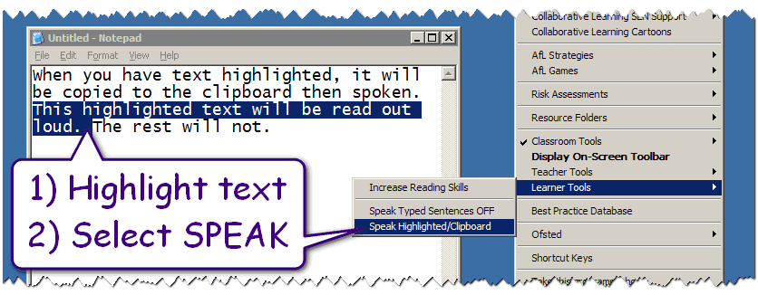

Speak Highlighted/Clipboard
The Teacher Toolkit will read any text that you have highlighted.

If you do not highlight anything, it will read whatever text is on your clipboard.
To stop the Text-To-Speech feature, simply refresh/reload the Teacher Toolkit (WindowsKey and R).